Słucha, podpowiada odpowiedź
Napisz, a Parlavo powie to Twoim głosem. Gdy ktoś pyta, Parlavo słucha na iPhonie i proponuje trzy odpowiedzi. Bez nagrywania dźwięku i bez konta.
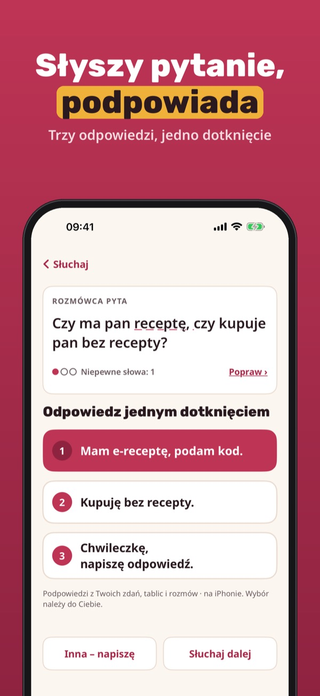
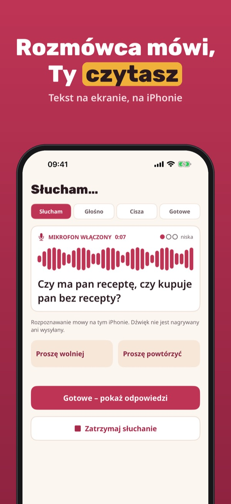
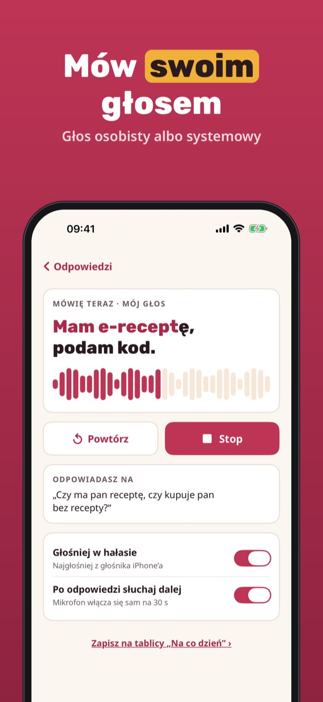
Parlavo pomaga rozmawiać osobom, które nie mogą mówić lub mówią z trudem. Wpisz zdanie albo dotknij gotowego, a Parlavo powie je Twoim głosem. Gdy rozmówca zada pytanie, Parlavo zamieni je w tekst i zaproponuje trzy odpowiedzi.
Pisanie i mówienie, jedna tablica zdań, karta awaryjna i 10 rozmów ze słuchaniem działają bez zakupu. Parlavo Plus to jednorazowy zakup: nieograniczone słuchanie, wszystkie tablice i pełna historia rozmów. Bez subskrypcji.
Parlavo jest narzędziem do komunikacji. Nie jest wyrobem medycznym, nie diagnozuje i nie leczy. Karta awaryjna nie dzwoni na numer alarmowy. Podpowiedzi to tylko propozycje – zawsze sprawdź, co mówisz.
Terms of Use (EULA): https://www.apple.com/legal/internet-services/itunes/dev/stdeula/
Privacy: https://baytechbv.github.io/privacy/parlavo-eu/
Ouve e sugere respostas
Escreva e o Parlavo diz com a sua voz. Quando alguém pergunta, o Parlavo ouve no iPhone e sugere três respostas. Sem gravação de áudio e sem conta.
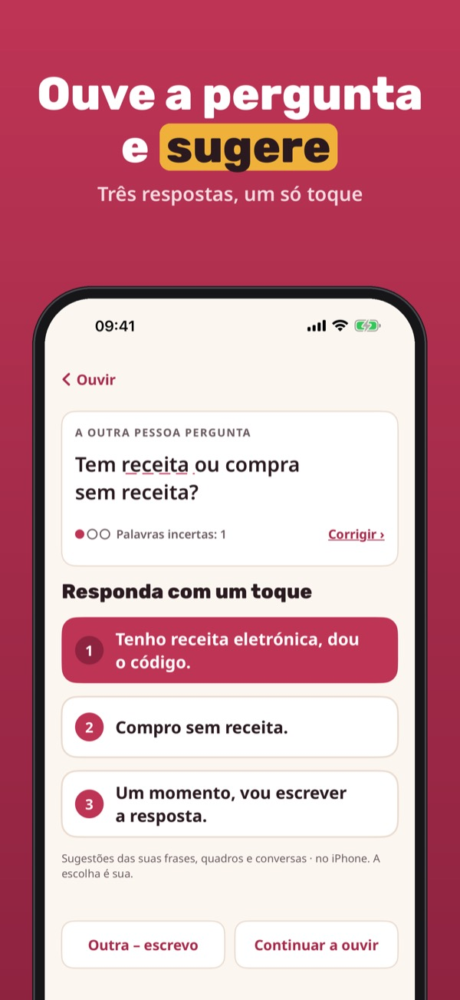
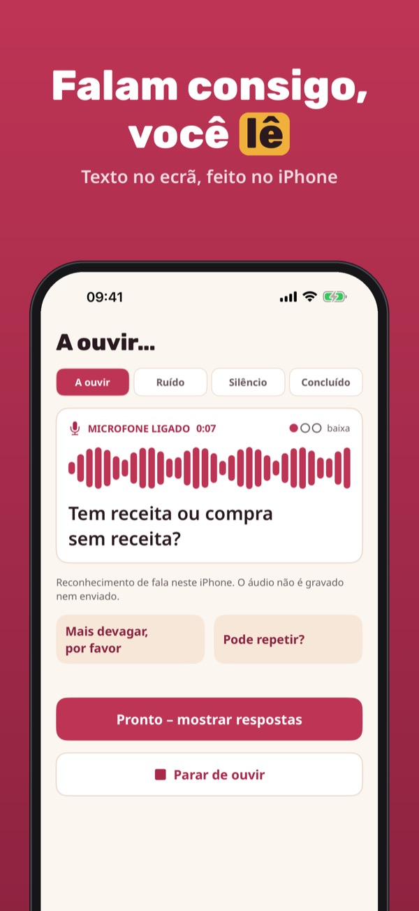
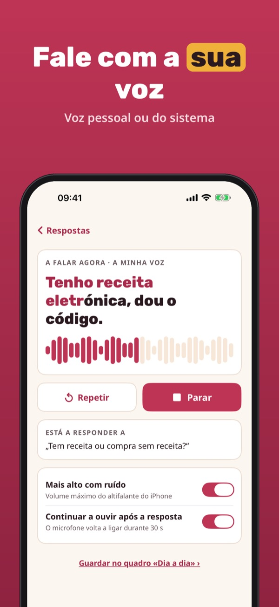
O Parlavo ajuda a conversar quem não consegue falar ou fala com dificuldade. Escreva uma frase ou toque numa frase pronta e o Parlavo di-la com a sua voz. Quando alguém lhe faz uma pergunta, o Parlavo transforma-a em texto e sugere três respostas.
Escrever e falar, um quadro de frases, o cartão de emergência e 10 conversas com escuta funcionam sem compra. O Parlavo Plus é uma compra única: escuta ilimitada, todos os quadros e histórico completo. Sem assinatura.
O Parlavo é uma ferramenta de comunicação. Não é um dispositivo médico, não faz diagnósticos nem tratamentos. O cartão de emergência não liga para o número de emergência. As sugestões são propostas – confirme sempre o que diz.
Terms of Use (EULA): https://www.apple.com/legal/internet-services/itunes/dev/stdeula/
Privacy: https://baytechbv.github.io/privacy/parlavo-eu/
Ascolta e suggerisce risposte
Scrivi e Parlavo lo dice con la tua voce. Quando qualcuno ti fa una domanda, Parlavo ascolta sull’iPhone e propone tre risposte. Niente registrazioni audio.
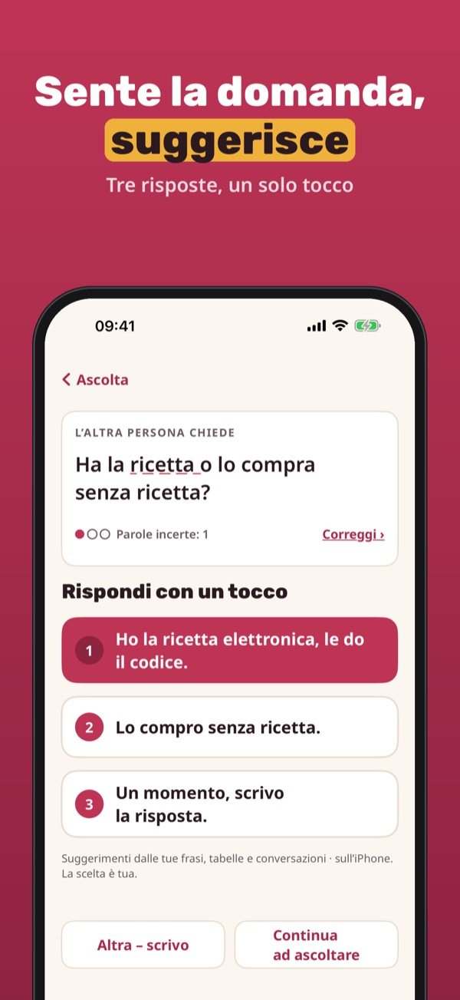
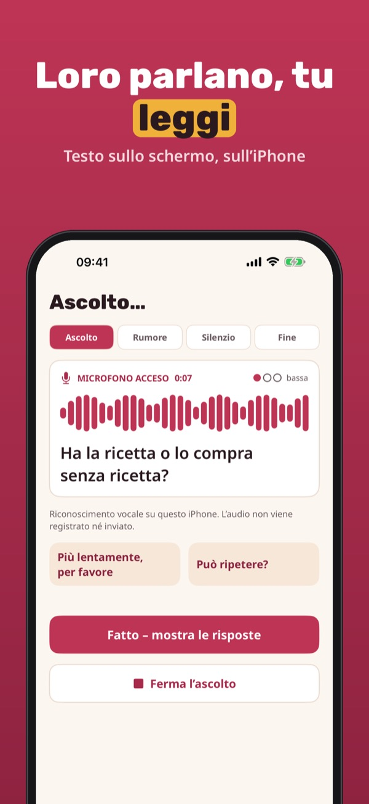
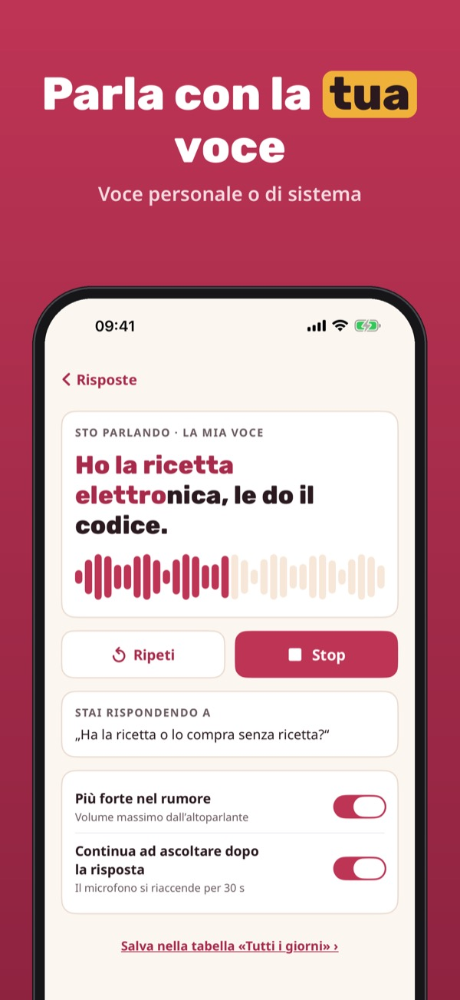
Parlavo aiuta a conversare chi non può parlare o parla con fatica. Scrivi una frase o tocca una frase pronta e Parlavo la dice con la tua voce. Quando qualcuno ti fa una domanda, Parlavo la trasforma in testo e propone tre risposte.
Scrivere e parlare, una tabella di frasi, la scheda di emergenza e 10 conversazioni con ascolto funzionano senza acquisto. Parlavo Plus è un acquisto unico: ascolto illimitato, tutte le tabelle e la cronologia completa. Nessun abbonamento.
Parlavo è uno strumento di comunicazione. Non è un dispositivo medico, non fa diagnosi né terapie. La scheda di emergenza non chiama il numero di emergenza. I suggerimenti sono proposte: controlla sempre cosa dici.
Terms of Use (EULA): https://www.apple.com/legal/internet-services/itunes/dev/stdeula/
Privacy: https://baytechbv.github.io/privacy/parlavo-eu/
Poslouchá a navrhne odpověď
Napište a Parlavo to řekne vaším hlasem. Když se vás někdo zeptá, Parlavo poslouchá na iPhonu a navrhne tři odpovědi. Bez nahrávání zvuku a bez účtu.
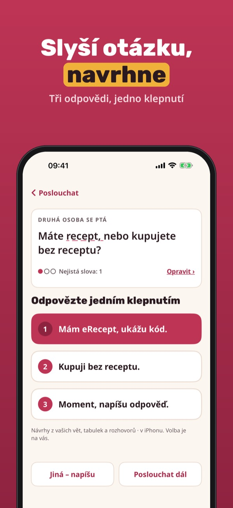
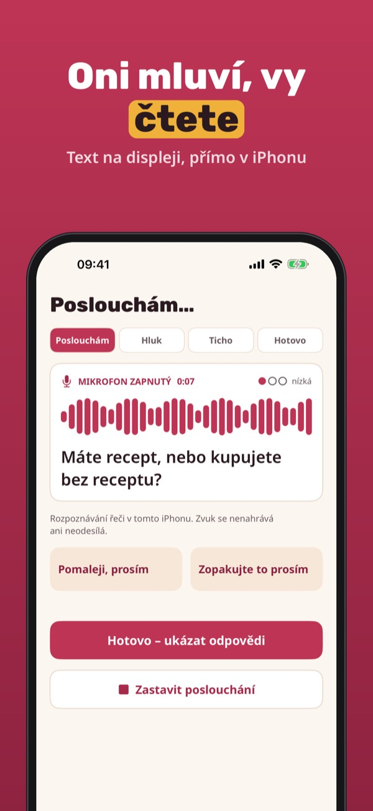
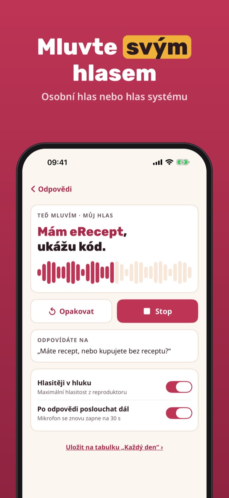
Parlavo pomáhá v rozhovoru lidem, kteří nemohou mluvit nebo mluví s obtížemi. Napište větu nebo klepněte na hotovou a Parlavo ji řekne vaším hlasem. Když se vás někdo na něco zeptá, Parlavo otázku převede na text a navrhne tři odpovědi.
Psaní a mluvení, jedna tabulka vět, nouzová karta a 10 rozhovorů s posloucháním fungují bez nákupu. Parlavo Plus je jednorázový nákup: neomezené poslouchání, všechny tabulky a celá historie rozhovorů. Bez předplatného.
Parlavo je nástroj pro komunikaci. Není zdravotnický prostředek, nestanovuje diagnózy a neléčí. Nouzová karta nevolá na tísňovou linku. Návrhy jsou jen návrhy – vždy zkontrolujte, co říkáte.
Terms of Use (EULA): https://www.apple.com/legal/internet-services/itunes/dev/stdeula/
Privacy: https://baytechbv.github.io/privacy/parlavo-eu/
Écoute et propose des réponses
Écrivez et Parlavo le dit avec votre voix. Quand on vous pose une question, Parlavo écoute sur l’iPhone et propose trois réponses. Sans enregistrement, sans compte.
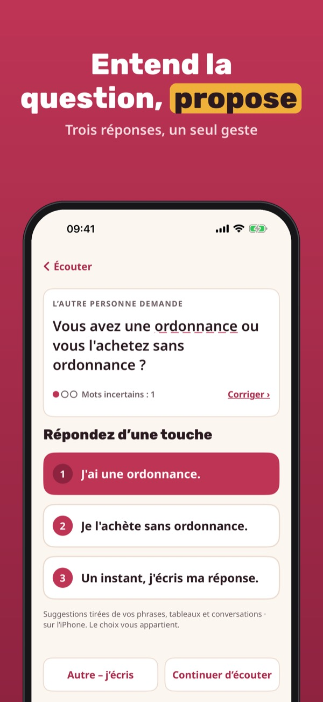
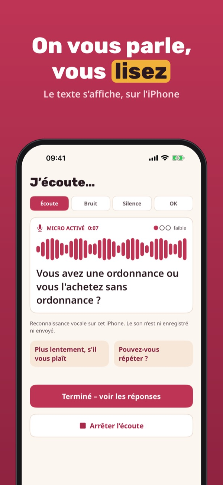
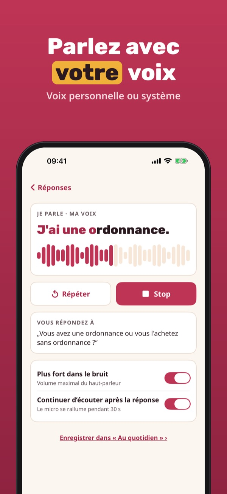
Parlavo aide à converser les personnes qui ne peuvent pas parler ou parlent difficilement. Écrivez une phrase ou touchez une phrase prête, et Parlavo la dit avec votre voix. Quand on vous pose une question, Parlavo la transcrit et propose trois réponses.
Écrire et dire, un tableau de phrases, la carte d’urgence et 10 conversations avec écoute s’utilisent sans achat. Parlavo Plus est un achat unique : écoute illimitée, tous les tableaux et l’historique complet. Sans abonnement.
Parlavo est un outil de communication. Ce n’est pas un dispositif médical : il ne pose aucun diagnostic et ne soigne pas. La carte d’urgence n’appelle pas les secours. Les suggestions sont des propositions : vérifiez toujours ce que vous dites.
Terms of Use (EULA): https://www.apple.com/legal/internet-services/itunes/dev/stdeula/
Privacy: https://baytechbv.github.io/privacy/parlavo-eu/
Escucha y sugiere respuestas
Escribe y Parlavo lo dice con tu voz. Cuando alguien te pregunta, Parlavo escucha en el iPhone y propone tres respuestas. Sin grabaciones de audio y sin cuenta.
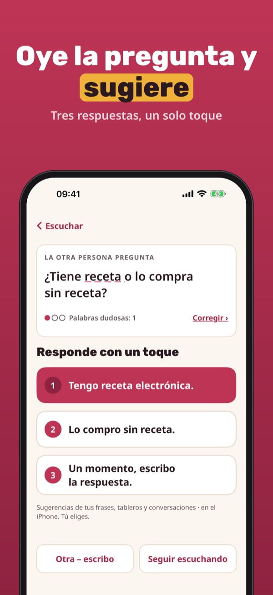
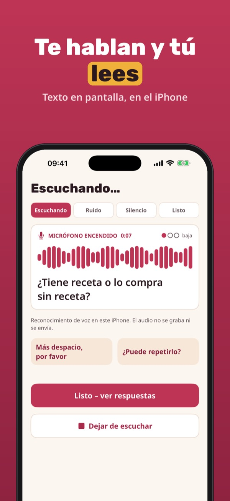
Parlavo ayuda a conversar a quienes no pueden hablar o hablan con dificultad. Escribe una frase o toca una frase preparada y Parlavo la dice con tu voz. Cuando alguien te hace una pregunta, Parlavo la convierte en texto y propone tres respuestas.
Escribir y hablar, un tablero de frases, la tarjeta de emergencia y 10 conversaciones con escucha funcionan sin compra. Parlavo Plus es una compra única: escucha ilimitada, todos los tableros y el historial completo. Sin suscripción.
Parlavo es una herramienta de comunicación. No es un producto sanitario, no diagnostica ni trata. La tarjeta de emergencia no llama al número de emergencias. Las sugerencias son propuestas: comprueba siempre lo que dices.
Terms of Use (EULA): https://www.apple.com/legal/internet-services/itunes/dev/stdeula/
Privacy: https://baytechbv.github.io/privacy/parlavo-eu/